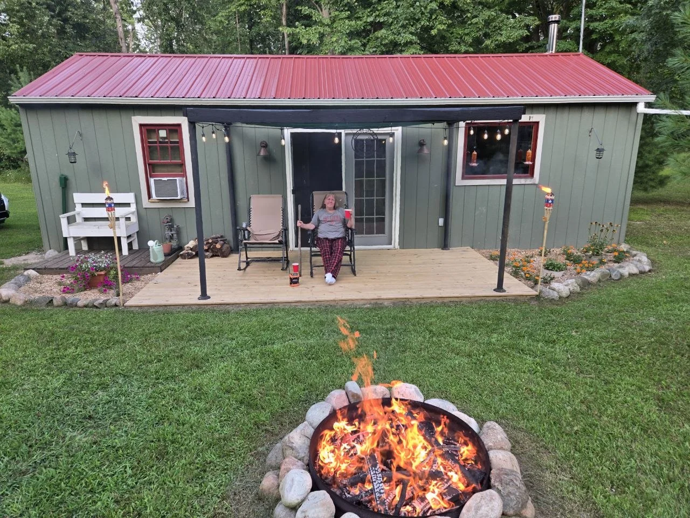
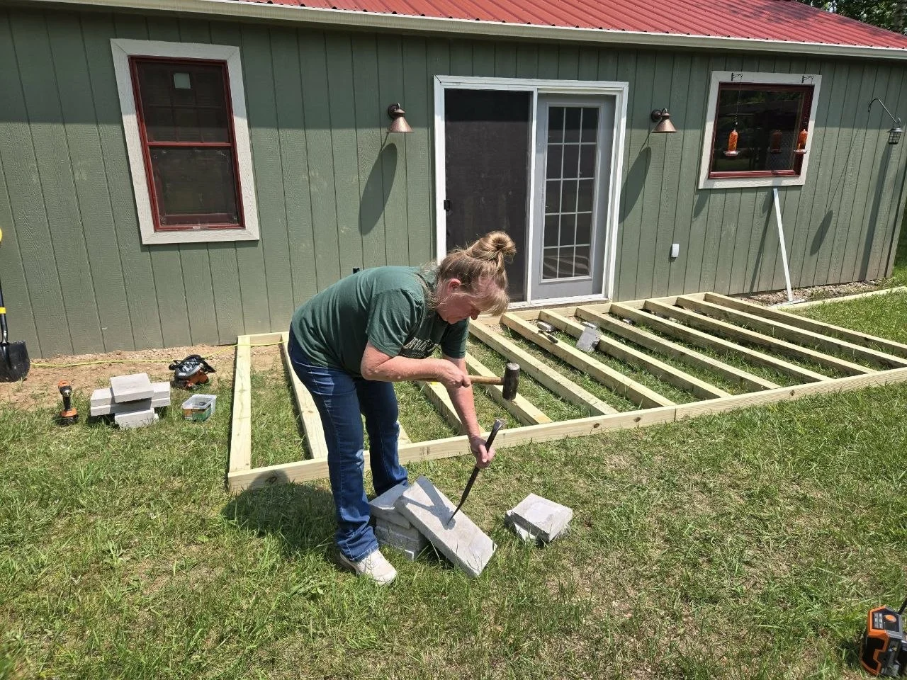
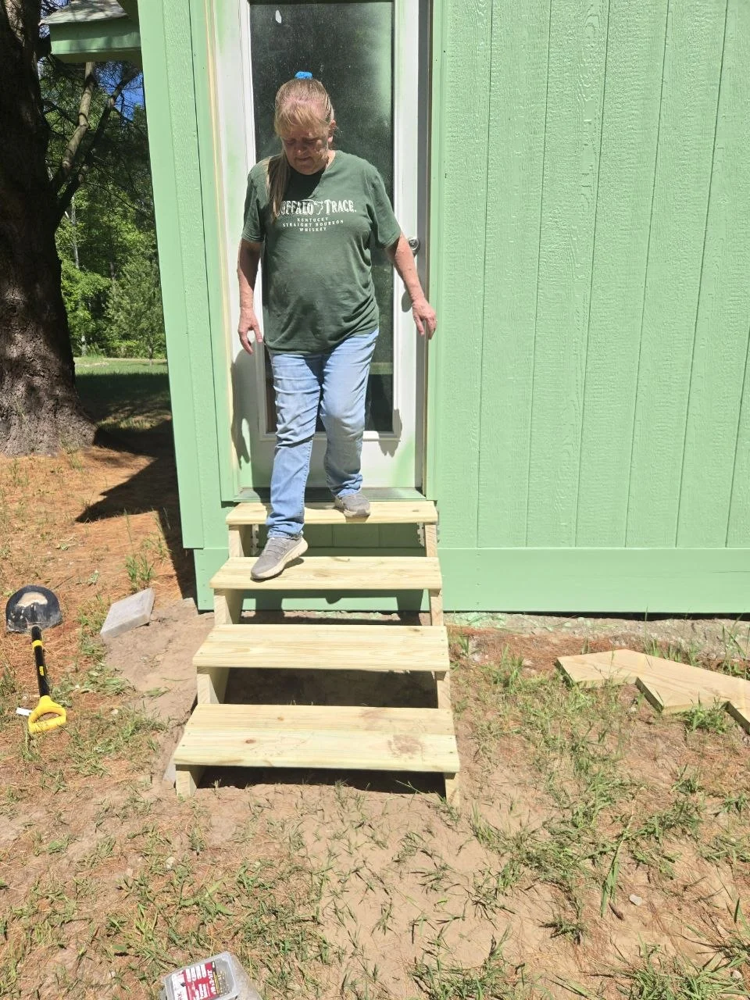
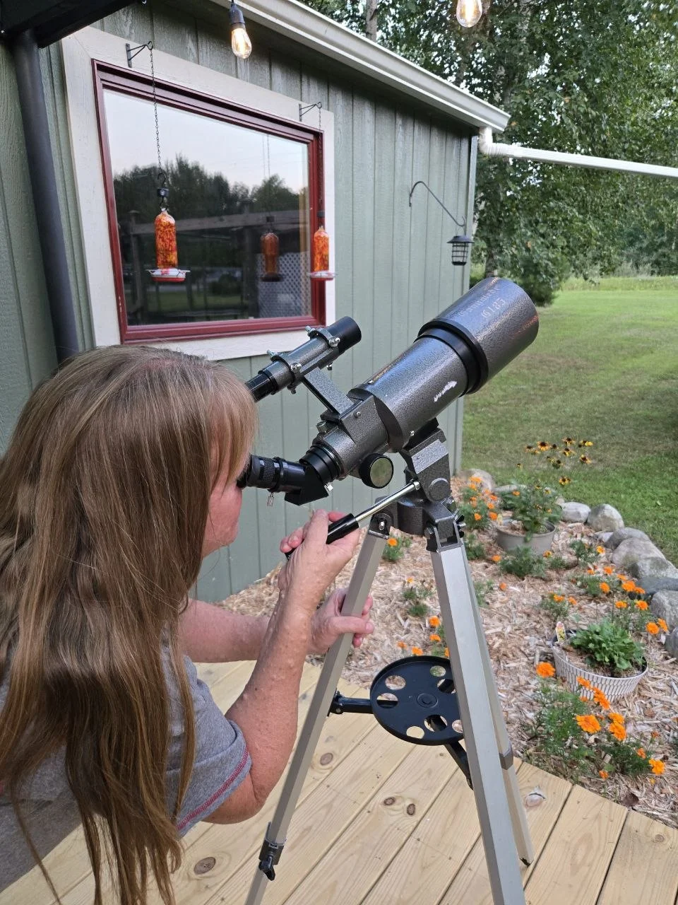
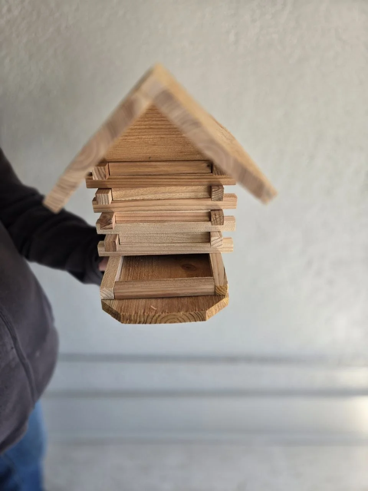

The little trellises
left the workshop.
First came the fan-shaped build. A week later in the late-May journal, the raspberry and blackberry trellises went into the ground.
Read what happened next See how we built oneNot someday.
A little at a time. Now.
We’re not waiting for retirement to start making the life we want. A garden. A cabin that’s still becoming. Useful things made by hand. And a growing cast of regulars expecting snacks.
Some things work. Some become another try.
Come along.
 Jeff & VanessaThe two of us behind QBL ↗
Jeff & VanessaThe two of us behind QBL ↗
A useful build. A garden lesson. A plan for the next try. The story keeps moving, even when the garden takes a rest.
This is our seasonal direction. The stories below keep their actual dates.
Follow the things we’re making Pick up a real build story ↗
Latest recorded cabin visitJune 2026 · Success & Frustration ↗
The city beds had to manage while we were away. The cabin began with one trial row. Water kept finding its way into the story.

Life pulled us toward the cabin. The garden back home still needed water.
At the cabin / June 2025Just one row, for now.The first vegetable trial brought a water-pump job, leaks and a small victory.
Back home / April 2026Let’s try a different approach.Terracotta ollas became an experiment. We haven’t reported a proven season-long result.
A deck gave us somewhere to pause. Later, a small set of stairs made another job easier. The useful things and the good part belong together.

Lumber, shoveling, a frame, and a lot of screws. The deck started as another job.
Read this part
The chairs came out. Shade, flowers and the regulars made it a place we wanted to use.
Read this part
By June 2026, a little set of stairs made the cabin-wall job easier to tackle.
Read this partOne chipmunk became Chippy. A woodpile gave us an idea. Then the playground started welcoming visitors we hadn’t planned for.

Chippy became one of the regular characters in cabin life. The story explains how he got his name.
Read this part
The chipmunks loved it. Moving the wood led to a scrappy little playground.
Read this part
Apparently, “squirrel playground” was more of a suggestion than a guest policy.
Read this part
The cabin is part of the future we’re building toward. But it counts now, too: evenings outside, a little time together, and a chance to enjoy what’s already there.
The deck, the garden, the berry patch and the jobs still waiting are all parts of the same unfinished place.
Follow the cabin story Go back to the beginningA build is not always the end of its story. Sometimes it is just the bit before the interesting part.
First came the fan-shaped build. A week later in the late-May journal, the raspberry and blackberry trellises went into the ground.
Read what happened next See how we built one

Vanessa’s Christmas Sip & Build belongs to the winter chapter. The workshop guide keeps the build; the feeder article carries the birdhouse style into another project.
Read the Sip & Build moment See the companion feeder
The city beds struggled. We tried a different way to water. The next result is still a question—not a success story we can claim yet.
Read the next try See the practical olla buildA little victory. A familiar bird. A mistake we can laugh about later. Dated notes from the real journal, recorded through June 2026.
Before the cabin walls, the storage shed needed a better way in.
Read the note
Earlier exterior view; the place behind this note.
The walls moved forward. The last piece of paneling had other ideas.
Read the note
One of the moments that made the place feel like itself again.
Read the note
There were small harvests. The grapes were not one of them.
Read the noteThe missed watering becomes a practical build. The berry patch becomes a trellis project. The questions we run into become places to help you begin.
Explore the QBL Field GuideWe hope to spend a lot more of our retirement here. But the life on the way there counts: the growing things, the projects, the regulars, and time together.
We’re still figuring out the next bit.
If that sounds like your kind of story, stay a while.
All photographs are authentic QBL material. Their captions distinguish recorded moments from the current seasonal focus. The latest recorded cabin chapter and newest Notebook material available here are dated June 2026; no newer visit, finished project or garden outcome has been invented.
The seasonal direction reflects Jeff’s current building-season brief. It shares the Field Guide’s selected season without changing the Field Guide or its settings. Notebook excerpts and story connections come from the existing published QBL journal, guides and photo journal.